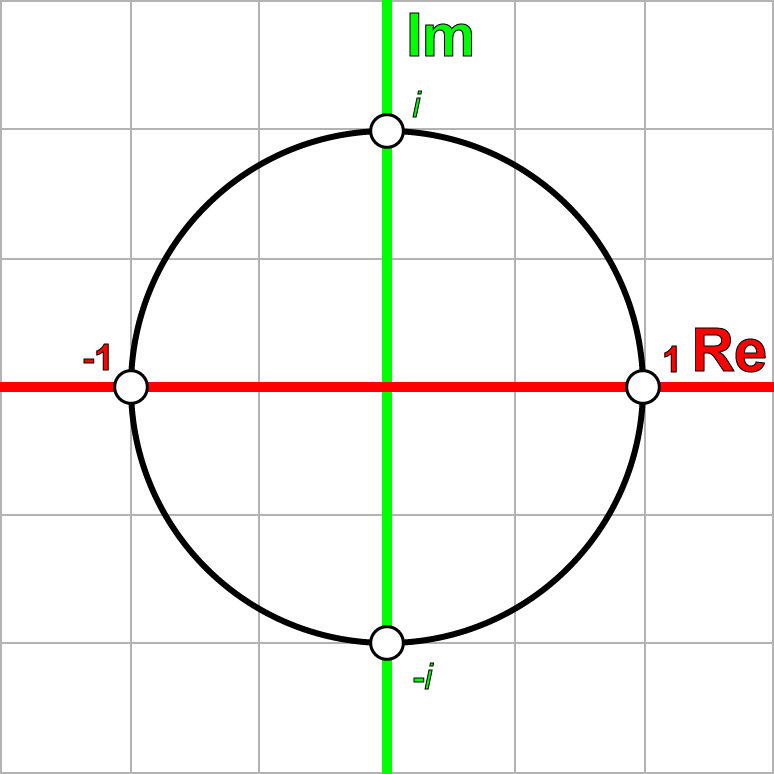

Understanding Quaternions 中文翻译《理解四元数》
Tags: maths, quaternion
原文地址:http://www.3dgep.com/understanding-quaternions/
正文
在这篇文章中我会尝试用简单的方式去解释四元数的概念，即用可视化的方式解释四元数以及几种对四元数的操作。我将把矩阵、欧拉角和四元数放在一起比较，并解释什么时候该用四元数、什么时候该用欧拉角或矩阵。
内容结构
- 介绍
- 复数 ### 复数的加减 ### 复数的系数缩放 ### 复数的积 ### 复数的平方 ### 共轭复数 ### 复数的绝对值 ### 两复数的商
- i的幂
- 复数平面 ### 旋转数（Rotors)
- 四元数 ### 作为有序数的四元数 ### 四元数的加减 ### 四元数的积 ### 实四元数 ### 四元数的系数缩放 ### 纯四元数 ### 四元数的加法形式 ### 单位四元数 ### 四元数的二元形式 ### 共轭四元数 ### 四元数规范 ### 四元数规范化 ### 四元数的逆 ### 四元数的点乘
- 旋转
- 四元数的插值 ### SLERP ### 四元数的差 ### 四元数求幂运算 ### 四元数的分数差 ### 考虑？ ### SQUARD
- 结论
- 下载Demo
- 引用
介绍
在计算机图形学中，我们使用转换矩阵来表示空间中的一个位置，以及朝向。一个转换矩阵还可以表示对一个目标的缩放或裁减(?)。 我们可以把转换矩阵想象成一个空间，当你用这个矩阵乘以向量、点（甚至矩阵）， 你就能把向量、点、矩阵转换进这个空间。
在这篇文章中，我不会讨论这个转换函数的细节。你可以查看我前面的文章，文章中描述了转换矩阵的细节。
在这篇文章中，我想要讨论一个可替代的方案，即用四元数来描述空间里的物体的朝向。
四元数的概念是由爱尔兰数学家Sir William Rowan Hamilton发明的（1843年，都柏林）。Hamilton当时正和他的妻子前往爱尔兰皇家研究院，当他从Brougham桥通过皇家运河时，他领悟到了一个激动人心的东西，并立刻把它刻在桥的一个石头上：
\[ i^{2} = j^{2} = k^{2} = ijk = -1 \]

William Rowan Hamilton Plaque on Broome Bridge on the Royal Canal commemorating his discovery of the fundamental formula for quaternion multiplication.
复数
在我们能够完全理解四元数之前，我们必须先理解四元数是怎么来的。四元数的根源其实是复数。
除了知名的数集（自然数、整数、实数、分数）之外，复数系统引入了一个新的数集——虚数。虚数的发明是为了解决一些特定的无解的方程，例如； \[ x^{2} + 1 = 0 \] 要解决这个等式，必须让\(x^{2} = -1 \)，在当然是不行的，因为任意数字的平方都是非负数。
一般而言，数学家是不能忍受一个等式是无解的，于是一个新的术语被发明了，它就是虚数，一个可以解决上面这个等式的数。
虚数有这样的形式：
\[ i^{2} = -1 \]
不要为这个术语较真，因为逻辑上这个数是不存在的。只要知道i是一个平方等于-1的东西即可。
虚数的集合可以用\( \mathbb{I} \)来表示。
复数的集合\( \mathbb{C} \)是一个实数和一个虚数的和，形式如下：
\[ z = a + bi \ a,b\in R,\ i^{2} = -1 \]
可以认为所有实数都是b为0的复数、所有虚数都是a=0的复数。
复数的加减
加法：
\[ (a_{1} + b_{1}i) + (a_{2} + b_{2}i) = (a_{1} + a_{2}) + (b_{1} + b_{2})i \]
减法：
\[ (a_{1} + b_{1}i) - (a_{2} + b_{2}i) = (a_{1} - a_{2}) + (b_{1} - b_{2})i \]
复数的系数缩放
\[ \lambda (a_{1} + b_{1}i) = \lambda a_{1} + \lambda b_{1}i \]
复数的积
\[ z_{1} = (a_{1} + b_{1}i) \] \[ z_{2} = (a_{2} + b_{2}i) \] \[ z_{1}z_{2} = (a_{1} + b_{1}i)(a_{2} + b_{2}i) = a_{1}a_{2} + a_{1}b_{2}i + b_{1}a_{2}i+b_{1}b_{2}i^{2} \] \[ z_{1}z_{2} = (a_{1}a_{2} - b_{1}b_{2}) + (a_{1}b_{2} + b_{1}a_{2})i \]
复数的平方
\[ z = (a + bi) \] \[ z^{2} = (a + bi)(a + bi) \] \[ z^{2} = (a^{2} - b^{2}) + 2abi \]
共轭复数
复数的共轭就是指把复数的虚数部分变成负的。共轭复数的符号是\(\bar z\)或\(z^{*}\)。
\[ z = (a + bi) \]
\[ z^{*} = (a - bi) \]
复数和它的共轭复数的乘积是：
\[ zz^{*} = (a + bi)(a - bi) = a^{2}-abi+abi+b^{2} = a^{2}+b^{2} \]
复数的绝对值
我们使用共轭复数来计算复数的绝对值：
\[ z = (a + bi) \]
\[ |z| = \sqrt {zz^{*}} = \sqrt {(a + bi)(a - bi)} = \sqrt {a^{2} + b^{2} } \]
两复数的商
\[ z_{1} = (a_{1} + b_{1}i) \] \[ z_{2} = (a_{2} + b_{2}i) \] \[ \frac {z_{1}}{z_{2}} = \frac {a_{1} + b_{1}i}{a_{2} + b_{2}i} = \frac {(a_{1} + b_{1}i)(a_{2} - b_{2}i)}{(a_{2} + b_{2}i)(a_{2} - b_{2}i)} \] \[ = \frac {a_{1}a_{2}-a_{1}b_{2}i+b_{1}a_{2}i-b_{1}b_{2}i^{2} }{a_{2}^{2} + b_{2}^{2}} \]
\[ = \frac {a_{1}a_{2} + b_{1}b_{2} }{a_{2}^{2} + b_{2}^{2}} + \frac {b_{1}a_{2} - a_{1}b_{2} }{a_{2}^{2} + b_{2}^{2}}i \]
i的幂
如果i的平方等于-1，那么i的n次幂也应该存在：
\[ i^{0} = 1 \] \[ i^{1} = i \] \[ i^{2} = -1 \] \[ i^{3} = ii^{2} = -i \] \[ i^{4} = i^{2}i^{2} = 1 \] \[ i^{5} = ii^{4} = i \] \[ i^{6} = ii^{5} = i^{2} = -1 \]
如果按照这个顺序写下去，会出现这样一个模式： (1,i,-1,-i,1,...)
一个类似的模式也出现在递增的负数幂：
\[ i^{0} = 1 \] \[ i^{-1} = -i \] \[ i^{-2} = -1 \] \[ i^{-3} = i \] \[ i^{-4} = 1 \] \[ i^{-5} = -i \] \[ i^{-6} = -1 \]
你可能已经在数学里头见过类似的模式，但是是以（x,y,-x,-y,x,...)的形式，这是在2D笛卡尔平面对一个点逆时针旋转90度时生成的；（x,-y,-x,y,x,...)则是在2D笛卡尔平面对一个点顺时针旋转90度时生成的。

复数平面
我们也能够把复数映射到一个2D网格平面——复数平面，只需要把实数映射到横轴、虚数映射到纵轴。

如前面的序列所示，我们可以认为，对一个复数乘以i，这个复数就在复数平面上旋转了90度。
让我们看看这是不是真的。我们随机地在复数平面上取一个点：
\[ p = 2 + i \]
p乘以i后得到q： \[ q = pi = (2+i)i = 2i+i^{2} = -1+2i \]
q乘以i后得到r： \[ r = qi = (-1+2i)i = -i+2i^{2} = -2-i \]
r乘以i后得到s： \[ s = ri = (-2-i)i = -2i-i^{2} = 1-2i \]
s乘以i后得到t： \[ t = si = (1-2i)i = i-2i^{2} = 2+i \]
t刚好是开始的p。如果我们把这些复数放到复数平面上，就得到下面的图：
我们也可以按顺时针方向旋转，只需要把上面的乘数i改成-i。
旋转数（Rotors)
我们也可以在复数平面上进行任意的旋转，只需要定义下面这个复数： \[q = cos\theta +isin\theta \]
任意的复数乘以q：
\[ p = a + bi \] \[ q = cos\theta + isin\theta \] \[ pq = (a + bi)(cos\theta + isin\theta ) \] \[ a' + b'i = acos\theta -bsin\theta + (asin\theta +bcos\theta )i \]
也可以写成矩阵的形式：
\[ \left[ \begin{matrix} a'&-b'\\ b'&a'\\ \end{matrix} \right] = \left[ \begin{matrix} cos\theta &-sin\theta \\ sin\theta &cos\theta \\ \end{matrix} \right] \left[ \begin{matrix} a&-b\\ b&a\\ \end{matrix} \right] \]
这也是一个在复数平面绕原点逆时针旋转任意点的方法。
四元数
了解了复数系统和复数平面后，我们可以额外增加2个虚数到我们的复数系统，从而把这些概念拓展到3维空间。
四元数的一般形式：
\[ q = s + xi + yj + zk s,x,y,z \in \mathbb{R} \]
上面的公式是根据Hamilton的著名的表达式得到的：
\[ i^{2} = j^{2} = k^{2} = ijk = -1 \]
以及：
\[ ij = k jk = i ki = j \] \[ ji = -k kj = -i ik = -j \]
你可能已经注意到了，i、j、k之间的关系非常像笛卡尔坐标系下单位向量的叉积规则：
\[ x\times y = z y\times z = x z\times x = y \] \[ y\times x = -z z\times y = -x x\times z = -y \]
Hamilton自己也发现i、j、k虚数可以被用来表达3个笛卡尔坐标系单位向量i、j、k，并且仍然保持有虚数的性质，也即\( i^{2} = j^{2} = k^{2} = -1 \)。
 （ij, jk, ki这几个性质的可视化）
（ij, jk, ki这几个性质的可视化）
上图展示了如何用i、j、k作为笛卡尔坐标系的单位向量。
作为有序数的四元数
我们可以用有序对的形式，来表示四元数： \[s,v] s\in \mathbb{R},v\in \mathbb{R^{3}} \]
其中的v，也可以用它各自独立的3个分量表示：
\[ q = [s,xi + yj + zk], s,x,y,z\in \mathbb{R} \]
使用这种表示法，我们可以更容易地展示四元数和复数之间的相似性。
四元数的加减
和复数类似，四元数也可以被加减：
\[ q_{a} = [s_{a},a] \] \[ q_{b} = [s_{b},b] \] \[ q_{a} + q_{b} = [s_{a} + s_{b},a + b] \] \[ q_{a} - q_{b} = [s_{a} - s_{b},a - b] \]
四元数的积
我们也可以表示四元数的乘积：
\[ q_{a}q_{b} = [s_{a},a][s_{b},b] \] \[ = (s_{a} + x_{a}i + y_{a}j +z_{a}k)(s_{b} + x_{b}i + y_{b}j +z_{b}k) \] \[ = (s_{a}s_{b} - x_{a}x_{b} - y_{a}y_{b} - z_{a}z_{b}) \] \[ + (s_{a}x_{b} + s_{b}x_{a} + y_{a}z_{b} - y_{b}z_{a})i \] \[ + (s_{a}y_{b}+s_{b}y_{a}+z_{a}x_{b}-z_{b}x_{a})j \] \[ + (s_{a}z_{b}+s_{b}z_{a}+x_{a}y_{b}-x_{b}y_{a})k \]
四元数的乘积依然还是一个四元数。如果我们把虚数i、j、k替换成有序对：
\[ i = [0,i] j = [0,j] k = [0,k] \]
以及还有[1,0] = 1，将它们代入前面的表达式，就得到了：
\[ q_{a}q_{b} = (s_{a}s_{b} - x_{a}x_{b} - y_{a}y_{b} - z_{a}z_{b})[1,0] \] \[ + (s_{a}x_{b} + s_{b}x_{a} + y_{a}z_{b} - y_{b}z_{a})[0,i] \] \[ + (s_{a}y_{b}+s_{b}y_{a}+z_{a}x_{b}-z_{b}x_{a})[0,j] \] \[ + (s_{a}z_{b}+s_{b}z_{a}+x_{a}y_{b}-x_{b}y_{a})[0,k] \]
再把这个表达式扩展成多个有序对的和：
\[ q_{a}q_{b} = [(s_{a}s_{b} - x_{a}x_{b} - y_{a}y_{b} - z_{a}z_{b}),0] \] \[ + [0,(s_{a}x_{b} + s_{b}x_{a} + y_{a}z_{b} - y_{b}z_{a})i] \] \[ + [0,(s_{a}y_{b}+s_{b}y_{a}+z_{a}x_{b}-z_{b}x_{a})j] \] \[ + [0,(s_{a}z_{b}+s_{b}z_{a}+x_{a}y_{b}-x_{b}y_{a})k] \]
如果把上面的式子再乘以单位四元数，并提取公共部分，就可以把等式改写成：
\[ q_{a}q_{b} = [(s_{a}s_{b} - x_{a}x_{b} - y_{a}y_{b} - z_{a}z_{b}),0] \] \[ + [0,s_{a}(x_{b}i + y_{b}j+z_{b}k) + s_{b}(x_{a}i+y_{a}j+z_{a}k)\] \[+(y_{a}z_{b}-y_{b}z_{a})i+(z_{a}x_{b}-z_{b}x_{a})j+(x_{a}y_{b}-x_{b}y_{a})k] \]
这个等式是2个有序对的和。第1个有序对是一个实四元数，第2个是一个纯四元数。这两个四元数也可以合并成一个：
\[ q_{a}q_{b} = [(s_{a}s_{b} - x_{a}x_{b} - y_{a}y_{b} - z_{a}z_{b}), \] \[ s_{a}(x_{b}i + y_{b}j+z_{b}k) + s_{b}(x_{a}i+y_{a}j+z_{a}k)\] \[+(y_{a}z_{b}-y_{b}z_{a})i+(z_{a}x_{b}-z_{b}x_{a})j+(x_{a}y_{b}-x_{b}y_{a})k] \]
如果把下面的表达式代入上面的等式：
\[ a = x_{a}i + y_{a}j + z_{a}k\] \[ b = x_{b}i + y_{b}j + z_{b}k\] \[ a\cdot b = x_{a}x_{b}i^{2}+y_{a}y_{b}j^{2}+z_{a}z_{b}k^{2} \] \[ a\times b = (y_{a}z_{b}-y_{b}z_{a})i + (z_{a}x_{b} - z_{b}x_{a})j + (x_{a}y_{b} - x_{b}y_{a})k \]
我们就得到了：
\[ q_{a}q_{b} = [s_{a}s_{b} - a\cdot b, s_{a}b+s_{b}a+a\times b] \]
这就是四元数乘积的一般式。
实四元数
一个实四元数是一个虚部向量为零向量的四元数：
\[ q = [s,0] \]
两个实四元数的乘积是另一个实四元数：
\[ q_{a} = [s_{a},0] \] \[ q_{b} = [s_{b},0] \] \[ q_{a}q_{b} = [s_{a},0] [s_{b},0] = [s_{a}s_{b},0] \]
这和2个虚部为0的复数的乘积几乎一样：
\[ z_{1} = a_{1} + 0i \] \[ z_{2} = a_{2} + 0i \] \[ z_{1}z_{2} = (a_{1} + 0i)(a_{2} + 0i) = a_{1}a_{2} \]
四元数的系数缩放
我们也可以用一个系数（实数）去乘四元数：
\[ q = [s,v] \] \[ \lambda q = \lambda [s,v] = [\lambda s,\lambda v] \]
我们可以用实四元数与普通四元数的乘积，来确认这个等式是否正确：
\[ q = [s,v] \] \[ \lambda = [\lambda ,0] \] \[ \lambda q = [\lambda ,0][s,v] = [\lambda s,\lambda v] \]
纯四元数
和实四元数相似，Hamilton也定义了纯四元数。纯四元数是s=0的四元数：
\[ q = [0,v] \]
也可以写成下面的形式：
\[ q = xi + yj + zk \]
然后是2个纯四元数的乘积：
\[ q_{a} = [0,a] \] \[ q_{b} = [0,b] \] \[ q_{a}q_{b} = [0,a] [0,b] = [-a\cdot b, a\times b] \]
四元数的加法形式
我们可以把四元数写成实四元数和纯四元数的和：
\[ q = [s,v] \] \[ = [s,0] + [0,v] \]
单位四元数
给定任意的向量v，我们可以把这个向量写成一个系数和一个单位方向向量的乘积：
\[ v = \upsilon \hat {v}\ \ v=|v|,|\hat {v}|=1\]
将这个定义和纯四元数的定义结合，就得到了：
\[ q = [0,v] \] \[ = [0,\upsilon \hat {v}] \] \[ = \upsilon [0,\hat {v}] \]
然后，我们可以定义单位四元数了，它是一个s=0、v为单位向量的四元数：
\[ \hat {q} = [0, \hat {v}] \]
四元数的二元形式
我们现在可以把单位四元数的定义和四元数的加法形式结合到一起，就创造了一种新的四元数的表示法，这种表示法和复数的表示法形似：
\[ q = [s,v] \] \[ = [s,0] + [0,v] \] \[ = [s,0] + \upsilon [0,\hat {v}] \] \[ = s + \upsilon \hat {q} \]
这就给了我们一种和复数非常相似的四元数表示法：
\[ z = a + bi \] \[ q = s + v\hat {q} \]
共轭四元数
共轭四元数的计算，就是将四元数的虚向量取反：
\[ q = [s,v] \] \[ q^{*} = [s,-v] \]
四元数和它的共轭四元数的乘积：
\[ qq^{*} = [s,v][s,-v] \] \[ = [s^{2} - v\cdot -v,-sv+sv+v\times -v] \] \[ = [s^{2} + v\cdot v,0] \] \[ = [s^{2} + v^{2},0] \]